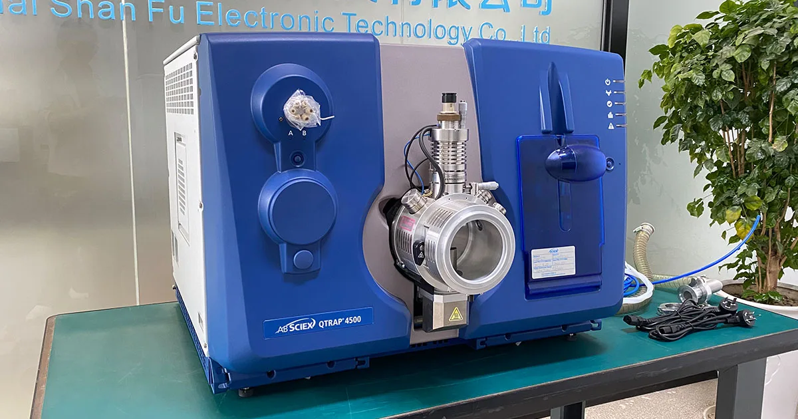
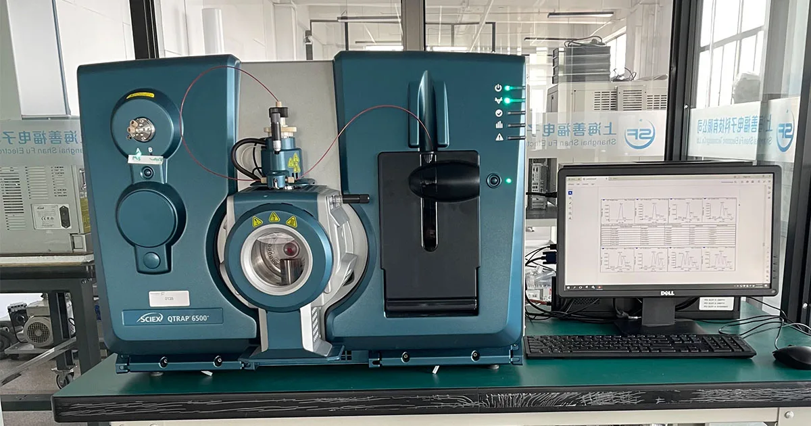
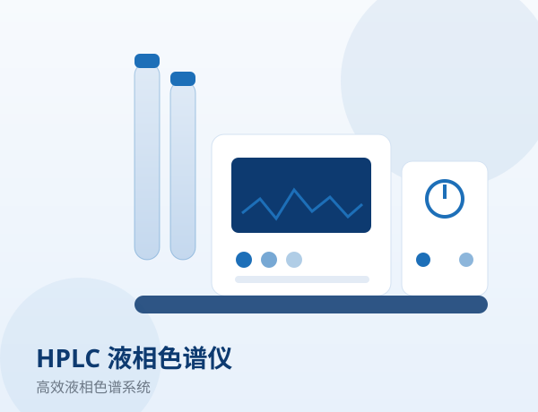
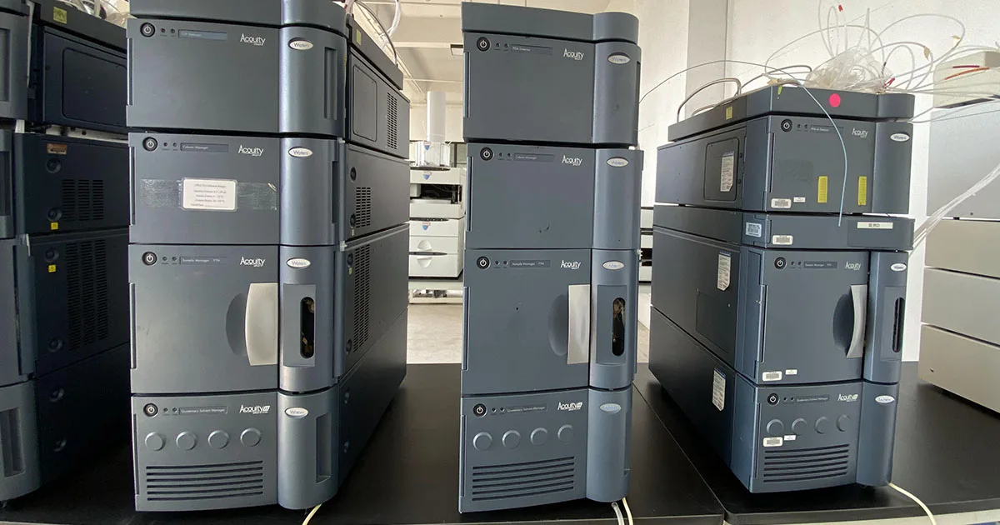
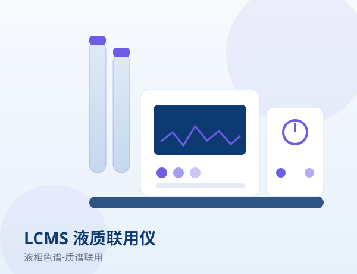
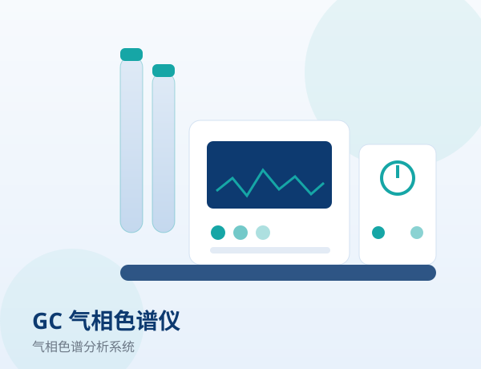
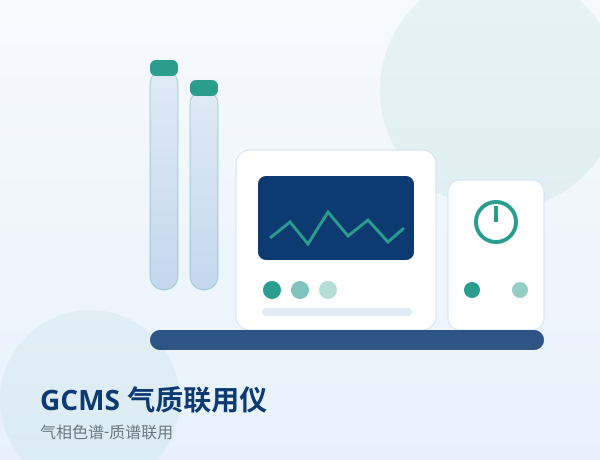
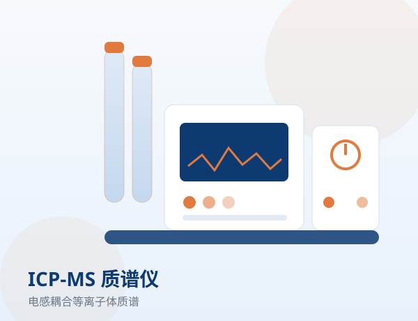
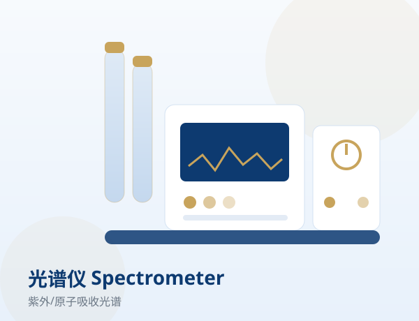
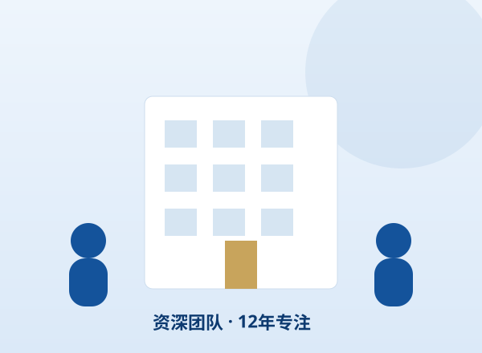

IN STOCK
二手分析仪器现货
最新上架与推荐机型，可翻页查看全部。

AB SCIEX QTRAP 4500 液质联用仪
液质联用 LCMS三重四极杆-线性离子阱复合质谱，定量定性兼备。
品牌：AB SCIEX
查看详情
AB SCIEX QTRAP 6500+ 液质联用仪
液质联用 LCMS三重四极杆-线性离子阱复合质谱升级机型，更高灵敏与更快扫描。
品牌：AB SCIEX
查看详情
二手液相色谱仪
液相色谱 HPLC二元/四元泵、自动进样、柱温箱成套配置，状态良好。
品牌：Waters / 岛津 / 赛默飞 / Sciex
查看详情
Waters ACQUITY UPLC 超高效液相色谱仪
液相色谱 HPLC超高效分离，耐压高、灵敏度好。
品牌：Waters
查看详情
二手液质联用仪
液质联用 LCMS三重四极杆液质，适用于定量与残留分析。
品牌：AB SCIEX / Waters / 赛默飞
查看详情
二手气相色谱仪
气相色谱 GCFID/ECD/FPD 多检测器，配毛细管进样系统。
品牌：岛津 / 赛默飞
查看详情
二手气质联用仪
气质联用 GCMS气相-质谱联用，定性定量兼优。
品牌：岛津 / 赛默飞
查看详情
二手 ICP-MS 质谱仪
ICP-MS电感耦合等离子体质谱，痕量元素分析利器。
品牌：珀金埃尔默
查看详情
二手光谱分析仪
光谱仪紫外、原子吸收、荧光等光谱仪器现货。
品牌：岛津 / 珀金埃尔默 / 赛默飞
查看详情
QUALITY
每台仪器都经过严格质检
上海善福对入库二手仪器执行外观、电气、性能三级检测，关键参数出具检测报告，并提供质保，确保到手即可稳定使用。
- 到货外观与配件完整性核查
- 电气安全与系统功能测试
- 关键性能指标校准与报告
- 交付前清洁、保养与打包